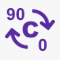
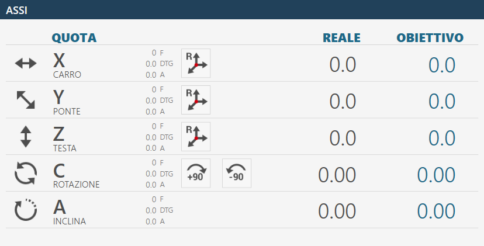
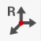
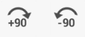
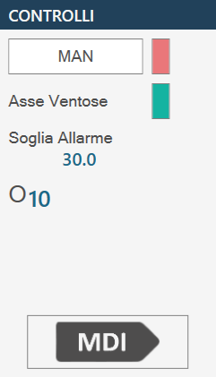
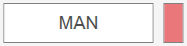
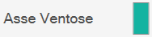
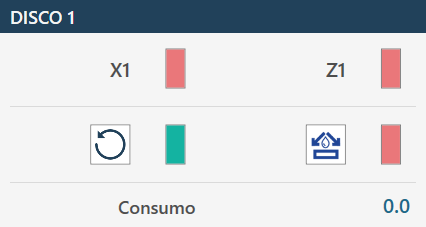
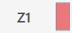

All’avvio dell’applicativo, se l’azzeramento degli assi è già stato eseguito, verrà visualizzata la seguente schermata iniziale:
ATTENZIONE!
In fase di avvio della macchina è indispensabile prestare la massima attenzione nel compiere movimenti con gli assi non avendo intrapreso la fase di azzeramento; potrebbero verificarsi collisioni con i fine corsa meccanici della macchina e comprometterne il corretto funzionamento.
Parametri Permette di accedere ai parametri programma di Parametrix.
Parametri Utensile Premendo il pulsante, si accede nella pagina dei parametri dell’utensile. Si rimanda al capitolo “Configurazione Utensile” per una descrizione dettagliata della pagina parametri.

Rotazione automatica 0/ 90 gradi L’asse “C" viene spostata automaticamente a 0 oppure 90 gradi nell’istante in cui viene premuto il pulsante.
Parcheggio automatico Quando viene premuto la macchina effettua uno spostamento in automatico degli assi “X”, “Y”, “Z”, “C” in posizione di zero. Gli spostamenti vengono effettuati dalla macchina rispettando l’ordine seguente: (A) - Asse “Z” in posizione di zero assoluto; (B) - Asse “C” in posizione di 0 assoluto; (C) - Asse “X” e “Y” contemporaneamente in posizione di Zero assoluto;
ATTENZIONE!
Per effettuare il parcheggio automatico devono essere rispettate alcune condizioni di sicurezza:
La posizione dell’Asse “A” deve essere a 0_.
Accertarsi che la zona di movimento interessata al posizionamento (Vedi figura accanto) sia libera.
Zero Effettua l’azzeramento degli assi (Questa operazione è necessaria quando viene avviata la macchina o quando gli indicatori rettangolari sono rossi). Quando il ciclo di azzeramento è concluso gli indicatori saranno di colore grigio. La fase di azzeramento prevede la movimentazione sequenziale degli assi:
Asse Z
Asse A
Asse C
Contemporaneamente gli Assi X e Y
Asse B (Optional: Tornio controllato)
NOTA
L’azzeramento è consentito solamente quando la chiave codificata è inserita nella postazione adeguata, individuabile sulla console operatore.
Accensione / Spegnimento acqua interna Premendo questo pulsante viene attivata l’acqua dall’interno dell’utensile. La segnalazione sopra il pulsante cambia il colore: Verde = Accesa; Rossa = Spenta.
Accensione / Spegnimento acqua Premendo questo pulsante viene attivata l’acqua del condotto principale. La segnalazione sopra il pulsante cambia il colore: Verde = Accesa; Rossa = Spenta.
Cambia Utensile Manuale Premendo il pulsante, si avvia la procedura di cambio utensile.
Manutenzioni Premendo questo pulsante verrà visualizzata una finestra contenente tutte le manutenzioni della macchina. Verranno visualizzate sia le manutenzioni da effettuare, sia quelle nella norma. Se almeno una manutenzione richiede.
Aiuto Premendo questo pulsante verrà modificata leggermente la grafica di tutti i bottoni attualmente visibili e il loro comportamento. È ora possibile premere qualunque bottone con un piccolo punto di domanda nell’angolo alto sinistro per poter apprendere la funzione offerta dal bottone tramite un piccolo messaggio. Per poter uscire da questa modalità di assistenza è semplicemente necessario premere nuovamente il pulsante “Aiuto“.
All’avvio dell’applicativo la funzionalità preselezionata è MANUALE. Questa barra laterale contiene i seguenti comandi e programmi/funzioni disponibili:
In questa interfaccia vengono riportati i valori degli assi della macchina.
Esempio di elemento dell’interfaccia “Assi“ con origine 0 e azzeramento degli assi già eseguito:

Esempio di elemento dell’interfaccia “Assi“ con origine 0 e azzeramento degli assi ancora da eseguire:
Di seguito si trova la spiegazione degli elementi che compongono questa sezione dell’interfaccia comune, vengono presi come riferimenti gli elementi nel caso assi già azzerati.
Quota reale: indica la posizione dell’asse rispetto all’origine attiva. Quota obiettivo: indica la quota da impostare per effettuare il movimento dell’asse attraverso la pressione del pulsante MDI o RTCP. F: Feed, velocità di movimento espressa in mm/minuto. DTG: Distance To Go, distanza dall’obiettivo. A: Ampere.

Reset Asse Premendo questo pulsante si imposta lo zero dell’origine attiva nel punto in cui si trova il relativo asse (X, Y o Z). L’operazione di reset asse può essere eseguita solo su origini diverse dalla 0 (zero). Per utilizzare l’origine in coordinate utensile (TCP) è necessario aver impostato le misure corrette dell’utensile montato prima di premere il pulsante Reset Asse.

Rotazione automatica _90 gradi La posizione dell’asse “C” viene incrementata di 90 gradi in senso orario. Esempio: la macchina si trova a 12 gradi, premendo il pulsante “Rotazione automatica _90 gradi” la macchina si porta a 102 gradi: 12 _ 90.
Rotazione automatica -90 gradi La posizione dell’asse “C” viene decrementata di 90 gradi in senso anti-orario. Esempio: la macchina si trova a 102 gradi, premendo il pulsante “Rotazione automatica -90 gradi” la macchina si porta a 12 gradi: 102 - 90.
In questo pannello sono proposti alcuni pulsanti il cui comportamento viene spiegato di seguito:


MAN (Attiva movimentazione manuale) Per poter utilizzare la macchina in manuale è necessario posizionare i mandrini in modo corretto e attivare alcune funzioni. Il pulsante è predisposto allo scopo.
NOTA
Quando è attivato l’uso manuale, il led indicatore affiancato diventa verde.

Asse Ventose Asse di riferimento su cui sono montate le ventose.
Soglia Allarme Indica la soglia oltre la quale viene attivato l’allarme e bloccata la rotazione del mandrino.
Origine selezionata Cliccando sul campo “Origine” verrà data all’operatore la possibilità di modificare l'origine con cui lavorare. La modifica di questo campo innesca l’aggiornamento dei valori degli Assi. I valori Origine possono variare da 0 a 19 compresi.
MDI Quando viene premuto, la macchina effettua il movimento fino al raggiungimento delle quote impostate nelle quote obiettivo (Vedi sopra). La velocità degli assi X e Y è comandata dai rispettivi potenziometri, mentre gli altri assi vengono comandati dal potenziometro interpolato.
Di seguito viene illustrata solo una delle finestre disponibili per l’operatore nella gestione dei dischi installati, in quanto le restanti presentano funzionalità analoghe.

Primo asse di riferimento Primo asse di riferimento per ogni disco (nell’esempio X1 per DISCO1)
NOTA
Nel posizionamento degli assi X viene preso come riferimento per la quota
obiettivo il centro del disco; la quota attuale si differenzierà per mezza anima del disco.

Secondo asse di riferimento Secondo asse di riferimento per ogni disco (nell’esempio Z1 per DISCO1)
Avvia/Arresta rotazione mandrino Gestisce l’accensione e lo spegnimento del disco del mandrino al quale si riferisce. La velocità del disco è selezionata nei parametri utensile.
Abilita/Disabilita acqua esterna mandrino Permette di gestire l’avvio e lo spegnimento dell’acqua relativa all’utensile scelto.
Consumo Indica la corrente assorbita dal motore mandrino.
Abilitazione / disabilitazione ventose Lo schermo mostra il gruppo ventose visto dall’alto nelle varie zone in cui è diviso. Premendo sull’area interessata, se ne cambia lo stato. Se verde indica che la zona è predisposta per effettuare il vuoto. Se rosso indica che la zona è predisposta per il soffio.
VENTOSE: ALZA - Parcheggio ventose Alla pressione del pulsante, vengono fatte rientrare le ventose in modo da portarle nella zona di riposo/parcheggio.
VENTOSE: ABBASSA - Predisponi ventose Alla pressione del pulsante vengono fatte scendere le ventose dalla zona di parcheggio fino al finecorsa. È importante che le ventose abbiano lo spazio necessario per fuoriuscire completamente.
SOLLEVA PEZZO: RILASCIA - Scaricamento pezzo Alla pressione del pulsante viene abbassato l’asse Z fino al contatto del materiale con il piano di lavoro, viene spenta la pompa del vuoto e acceso il soffio da tutte le ventose per staccare il pezzo. Dopo l’attesa di un time-out, viene sollevato l’asse fino a quota di sicurezza.
SOLLEVA PEZZO: AVVIA - Sollevamento pezzo Con questo comando le ventose vengono portate a contatto con il materiale, viene accesa la pompa del vuoto nelle aree segnate in verde e il soffio nelle aree segnate in rosso, e quando il vacuostato segnala che il vuoto è stato generato, viene sollevato l’asse fino alla posizione impostata per le movimentazioni.
ATTENZIONE!
Prestare attenzione alle ventose attive facendo in modo di utilizzare la maggior area possibile per sollevare il pezzo.
VUOTO - Comando pompa del vuoto Questo pulsante accende e spegne la pompa del vuoto. L’indicatore segnala se la pompa è accesa (verde) o spenta (rosso).
SOFFIO - Comando soffio Il pulsante accende o spegne il soffio dalle ventose che non sono predisposte per il vuoto. L’indicatore segnala se il soffio è acceso (verde) o spento (rosso).
Prestare particolare attenzione alle ventose attive durante il sollevamento, assicurandosi che le aree utilizzate siano sufficienti a sollevare il pezzo oggetto della movimentazione. Cercare di utilizzare sempre la maggior area di vuoto disponibile per effettuare la presa del pezzo e controllare che non ci siano difetti e rotture sul materiale che possano creare pericoli o problemi al funzionamento della macchina. Una volta accesa la pompa del vuoto, il suo spegnimento è consentito solo attraverso le funzioni automatiche predisposte allo scopo. La pressione del pulsante di reset o del fungo di emergenza non ha alcun effetto sulla pompa del vuoto che continuerà a funzionare. Lo spegnimento della pompa può essere forzato mediante l’apposito pulsante dentro la pagina “Comandi Aggiuntivi”. Nelle procedure automatiche, prima di effettuare il sollevamento del pezzo, viene controllato lo stato del vuoto attraverso un apposito sensore: se non viene rilevato un valore di vuoto sufficiente appare l’allarme “mancanza vuoto”. La pompa continuerà a rimanere attiva fino a quando il vacuostato non rileva un valore corretto, oppure se verrà disabilitata dalla pagina “Comandi Aggiuntivi”.
ATTENZIONE!
La mancanza di alimentazione alla pompa del vuoto comporta una veloce perdita dello stesso e la conseguente caduta del materiale sollevato con le ventose.
La barra inferiore visualizza messaggi informativi e di errore e alcuni pulsanti per determinate funzionalità. Vengono di seguito proposti tre esempi di barra inferiore:
Senza allarmi attivi.
Con un’emergenza generale abilitata, riportata con un’icona, un codice di errore (in questo caso PE0000), la relativa descrizione e il pulsante degli allarmi a destra lampeggiante.
Con un messaggio riportato, nell’esempio JOG diretto attivo.
Allarmi Permette all’operatore di accedere alla finestra degli allarmi.
Minimizzazione del software Permette all’operatore di uscire dalla pagina del software.
Spegnimento della macchina Permette all’operatore di spegnere definitivamente la macchina.
La pagina allarmi indica gli Allarmi/Messaggi attivi del sistema. Se la macchina non ha allarmi attivi la pagina risulta vuota, altrimenti sarà presente una riga per ogni errore presente. Nella seguente pagina di esempio relativa alla gestione e visualizzazione degli allarmi è visualizzato un allarme attivo nel sistema: